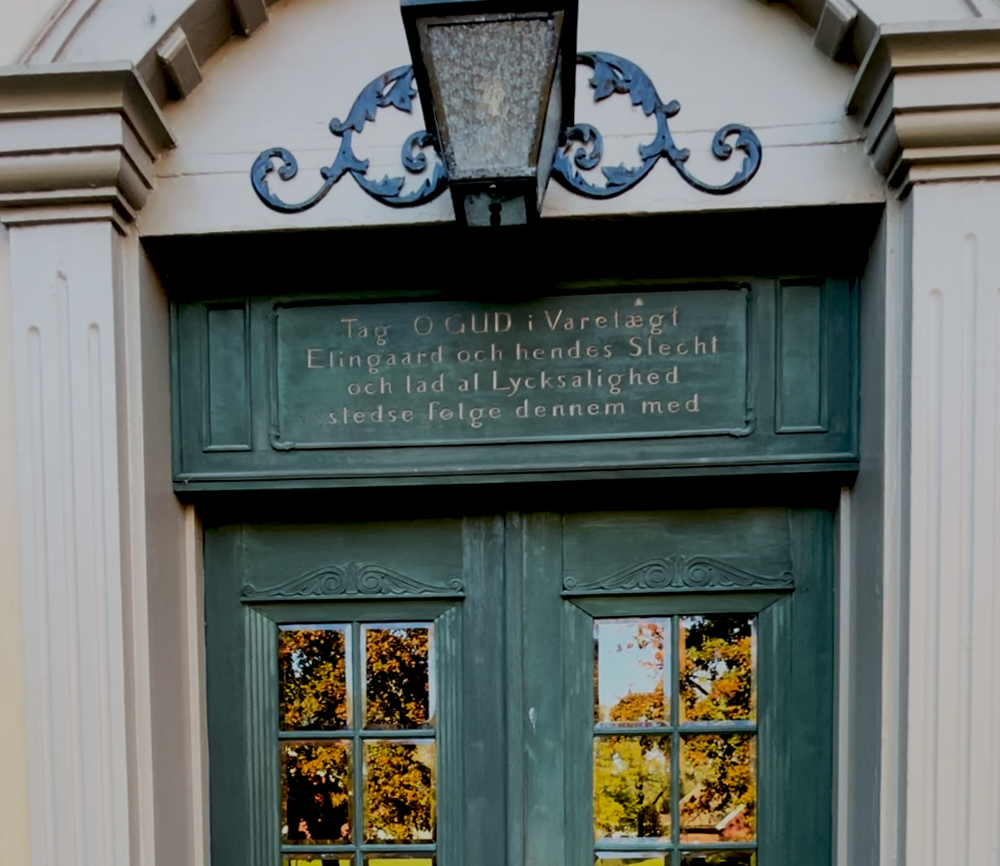

Vi har også fått tilgang til diverse dokumenter fra Jenni Caspersen, som blir benyttet i forbindelse med omvisninger på gården
Elingaard Herregård lyses opp av billyktene. Den skjuler seg litt bak noen enorme eiketrær, men står allikevel der i all sin prakt, og tar all oppmerksomheten i det ellers så flate åkerlandskapet. Man får en følelse av at denne plassen har sett det meste, - også ting vi aldri vil få høre om. Det grøsser faktisk litt på ryggen, mens jeg mimrer tilbake til skoleomvisninger på denne herregården. Jeg kan huske en mørk, skummel kjeller, hvor vi barna skremte hverandre. Men det jeg husker aller best, er øynene fra et maleri som fulgte etter meg. Øynene til fru Birgitte Christine Kaas.
Jeg har vært så heldig å få omvisning på Elingaard herregård av arenakoordinator Jenni Caspersen, og også detaljerte beskrivelser av spøkelseshistorier som kan knyttes opp mot historien, av museumsvert og spøkelsesvandringsarrangør for Østfoldmuseene, Inger Tvete. Hun har vist mange synske rundt på gården.
Historiene vi fikk var mange og spennende, om sentrale personer på Elingaard. Vi har valgt oss ut tre av disse menneskene, og gjenforteller deres historier.
Historiene
Klikk på bildene for å komme til de ulike delene av saken
Elingaard Herregårds historie strekker seg tilbake til middelalderen, og første kjente eier finner på 1300-tallet. Det er gjort arkeologiske funn på tomten som kan dateres tilbake til vikingtiden, rundt år 800, og helleristninger og gravhauger i området kan dateres til førhistorisk tid. Det er mye som tyder på at denne plassen i Onsøy har vært et ettertraktet område i lange tider. Selve gården kan dateres tilbake til 1300-tallet, men har i ettertid brent ned (minst) to ganger, og dagens bygningsmasse ble reist av familien Huitfeldt-Kaas på 1700-tallet. Herregården har vært i adelig eie helt fra sin opprinnelse, men er i dag i offentlig eie. Herregården er som herregårder flest, rik på historie om både de levende og de døde.
1300-tallet
Gården eies av Jon Havtoreson. Lite kilder fra denne tiden, men sannsynligvis arvet han Elin fra sine foreldre. Jon's morfar var Kong Håkon 5. Magnusson.
1400-tallet
Gården eies av Åsa Ulfsdatter og Olav Torsteinson. Deres slekt kalles Gyldenhorn, etter deres våpenskjold.
1500-tallet
Henrik Brockenhuus og hans kone Dorthe Nilsdatter Juel. De får ett barn, Sophie, som senere tar over gården. Dorthe er en mektig kvinne, som etter Henriks død bor med sin datter på gården.
1600-tallet
Elingaard eies av Jens Bjelke og Sophie Brockenhuus, de flytter inn i 1609 som nygifte. Øverste sjikt av norsk adel, og blant de rikeste i Norge. Sammen fikk de 14 barn.
1700-tallet
Elingaard eies av Henrik Jørgen Huitfeldt, Jens Bjelkes oldebarn. Gift med Birgitte Christine Kaas, som også var Jens Bjelkes oldebarn.
Rikskansler Jens
Jenni Caspersen tar meg imot ved hovedinngangen. Hun er arenakoordinator på Elingaard, og bor også i en fløy på gården. «Vi kan starte i Jens Bjelkes kjeller». Jeg tøffer meg litt, og følger etter henne ned trappene.
Adelsmannen Jens Bjelke giftet seg inn på Elingaard i 1610, via landets rikeste arving Sophie Brockenhuus. Fra å «kun» være adelsmann, ble han senere også Norges rikskansler. Han tilhørte kongens nærmeste krets, og tilførte Elingaard Herregård en ære og status det verken har sett før eller siden. Jens Bjelkes kjeller ble (sannsynligvis) oppført i 1646. Den er akkurat like kald som den ser ut. I et av kjellerrommene kan vi se spor av bolter, som stammer fra tiden da Bjelke fikk gjennom en lov, som gjorde han myndig over loven. Dette rommet ble da benyttet som et fengsel, - uten behov lov eller dom. Jens Bjelke styrte praktisk nok dette selv. Jenni forteller at adelsfolket følte seg overordnet Norsk lov, og som en gudfryktig familie, kan det tenkes at Bjelke selv mente han gjorde guds jobb ved å straffe sine fanger på eget initiativ. Inger forteller om mange synske som har reagert nede i denne kjelleren, senest Lilli Bendriss som var på besøk med serien «Spøkelsesjegerne» Historiene sier at man på natten kan høre det banke i murveggene, og desperate rop om hjelp. Dette skal være fangene til herr Bjelke.
I det ene rommet henger en bolt fra taket, og man kan skimte gamle blodflekker på veggene.
Dette antas å være Jens Bjelkes fangekjeller, hvor han utøvde straff slik han selv mente best.
Det sies at det banker i murveggene her på nettene, og at man kan høre skrik fra en mannsstemme, et desperat rop om hjelp.
På et tidspunkt nede i kjelleren går det en alarm, og Jenni må gå for å se hva det dreier seg om. Plutselig står jeg helt alene i kjelleren med alle historiene, og begynner å forstå hvorfor Lilli Bendriss slet med å puste her nede. Med en noe raskere puls enn tidligere tar jeg noen bilder for å dokumentere kjelleren, før jeg piler opp trappene igjen med en følelse av at noen følger etter meg med kalde hender.
General Birte
«Trygt» oppe i første etasje, står jeg foran et portrett av Birgitte Christine Kaas. - Hun er akkurat slik jeg husker det fra barndommen, med øyne som borer seg inn i meg og følger meg når jeg går. – to do: utbrodere her. Jeg forter meg å ta noen filmer av portrettet, og løper inn i rommet ved siden av. Ser at bildene ikke ble så gode, løper tilbake og prøver igjen. Hele tiden føler jeg meg iakttatt, og jeg blir overlykkelig når Jenni endelig vender tilbake.

"Tag O GUD i varetægt
Elingaard och hendes Slecht
Och lad al Lycksaligfhed
Stedse følge dennem med"
Birgitte Christine Kaas er rikskansler Jens Bjelkes oldebarn. Som sin oldefar var hun en høyt ansett adelskvinne. Hun var rak i ryggen, kunne flere språk og likte å skrive. Hun oversatte salmevers, og skrev poesi. I Birgitte og mannen Henrik Jørgens levetid, var de svært opptatt av etikette, gudfryktighet og adelens privilegier. Elingaard hadde på deres tid nesten hele Onsøy i sitt eie, deriblant Onsøy Kirke. Det sies at i deres tid begynte ikke kirkeklokkene å ringe inn til gudstjeneste før Huitfeldt-Kaas var på plass. Slik kan det tolkes at adelsfamilien i noen sammenhenger overgikk Gud. Som på alle herregårder, hadde presten sitt eget værelse på gården. Jenni forteller; «det sies at presten fra Onsøy Kirke var innom herregården oftere enn hva som var vanlig kutyme, og familien satte kirke og prest høyt». Birgittes oversatte salmevers «Sørg, o Kjære Fader du» står fremdeles i salmeboken den dag i dag. Etter brannen på gården i 1746 ønsket Birgitte at en tekst hun hadde skrevet, som velsignet Elingaard og dens slekt, skulle stå over den nye hovedinngangen. Denne teksten står der den dag i dag, dog spøker det litt for budskapet, da Elingaard på begynnelsen av 1900-tallet gikk ut av adelsslektene og inn i det offentlige.
Historien om general Birthe på den annen side, som etter hvert ble hennes kallenavn, den starter først når hennes mann dør. I mange år allerede har hun styrt Elingaard med sikker hånd, i mannens fravær i krigstjeneste. Hun ble ansett som en streng kvinne, og hun holdt styr på Elingaard og en stor tjenestestab med et «usedvanlig talent». I 1751 blir Birgitte enkekvinne. I de neste ti år styrte hun herregården med jernhånd, og det sies at det like gjerne kunne kalles Elingaard Fruegård i hennes tid i enkesetet. Tjenestestaben hadde stor respekt for henne, og det sies at de også var litt redde. Gjorde de en feil, ble de straffet.
En sen høstkveld var hun på vei hjem fra en av sine herregårder, Kjølberg gård, etter en festlig aften med kortspill og selskapeligheter. Det er en regntung kveld, og kusken skal ha hjulpet henne inn i vognen, og kjørt uten stans tilbake til Elingaard.
Vel fremme på Elingaard åpner kusken døren til vognen for å la Birgitte stige ut, men det viser seg at vognen er tom.
Kusken sanser hennes parfyme og hører hennes skritt, men Birgitte Christine blir aldri sett igjen. I alle fall ikke i levende form…
Vaktmester Pettersen
Inger forteller engasjert om vaktmester Pettersen, som jobbet og bodde på Elingaard på 1950-tallet. Pettersen hadde mange historier fra gården, også personlige opplevelser. Han sanset til stadighet Birgitte rundt seg. Det hendte ofte når han vasket gulvet i storsalen, og flyttet på møbler for å komme til i krokene, at møblene ble flyttet tilbake når han forflyttet seg og skurte gulvet i et annet rom. Han kunne både høre møblene bli dratt over gulvene, og se de stå perfekt oppstilt når han kom tilbake. Pettersen kunne lukte parfymen hennes i rommet, og var helt sikker på at dette var «general Birthe» som holdt orden på herregården. Elektrikere som arbeidet på loftet for Pettersen, kom stadig løpende ned til ham, helt likbleke, etter å ha observert en myndig dame i skyggeform gå frem og tilbake i den andre enden av gangen. General Birthe blir stadig observert, den dag i dag, og jeg må innrømme at det ligger en følelse av noe mer enn bare det menneskelige over hele gården.
Det er visstnok ikke bare general Birthe som går igjen på gården. Pettersen fortalte også om en annen krabat som laget lyder i veggene. Den store doble trappen ved inngangen forsvant i brannen i 1746, og det ble satt inn en mindre trapp i rommet ved siden av. Allikevel, på kveldstid har flere gjester og ansatte hørt skrittene fra fire poter i løse luften. Dette antas å være Birgittes katt, som historien sier døde i brannen. Ifølge vaktmester Pettersen har overnattingsgjester måttet bytte rom fra 2. etasje på hovedgården og over til stabburet for å få nattesøvnen sin, da lydene fra en katt og dens general, samt ropene om hjelp fra kjelleren, har blitt for overveldende.
Kart over Elingaard
Klikk deg rundt på kartet og lær mer om de ulike rommene på gården.
Med ryggen til gården føles det som om øynene stirrer meg i nakken. Er det general Birthe som står i vinduet, eller er det kanskje gården selv - som ser alt? Jeg velger å tenke som Henrik Wergeland;
«Jeg verken tror på gjenferd eller fanden. Jeg tror det spøker indenfor panden».